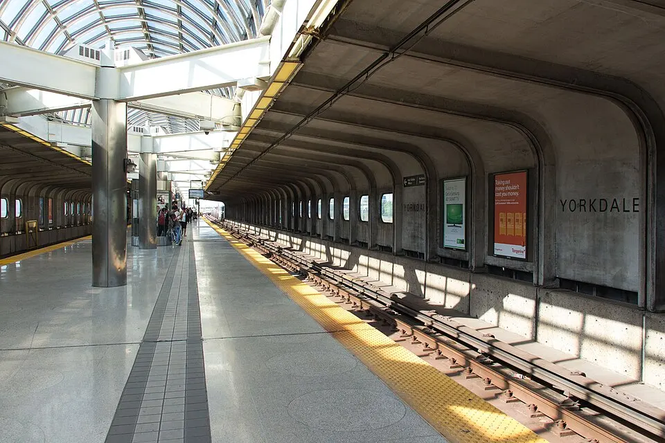

Signal
SignalStation atlas / Yorkdale
Station history
Yorkdale


Station history
Trains began serving the shopping centre beneath an arched glass roof. Michael Hayden’s Arc en Ciel used moving bands of coloured neon to respond to arriving and departing trains.
Subway commuter parking reopened beneath the east end of Yorkdale Shopping Centre, on three levels of the mall’s Parkade E.
The TTC completed the station’s accessibility retrofit, giving riders a step-free route to the subway.